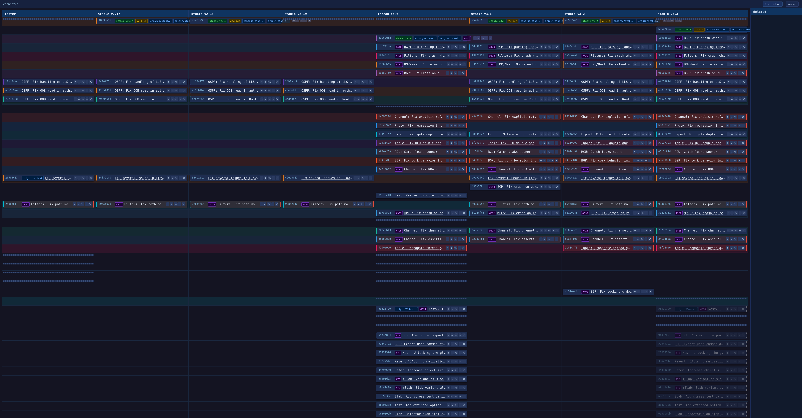

Every bugfix. Every security patch.
Five branches.
Good luck remembering which commits landed where.
it's not much, but it's honest work

actual screenshot from the BIRD Internet Routing Daemon project.
yes, those are real commits. yes, that maintainer is fine now.
besides making you feel slightly less overwhelmed
commits that are the same logical change are automatically detected and shown in matching colors across all branch columns. you can finally see what's missing where.
drag a commit card to another branch column to cherry-pick it there. drag within a column to reorder. queue up multiple moves — they run in order with progress labels. conflicts show you the full git output.
click − to hide a commit. it folds into a thin strip you can click to peek inside. auto-hide merge commits. filter by headers in commit bodies. hidden state persists across restarts.
edit a commit's message or author with ✎. if the same logical commit lives on N branches, one Save updates all of them simultaneously. because forgetting to update the commit message on stable/v3 is embarrassing.
"me, four terminal windows open, trying to remember
if I cherry-picked that security fix onto stable/v2"
requires Python 3.12+. that's it. no Electron, no npm, no demons.
# get it git clone https://github.com/marenamat/stable-branch cd stable-branch python -m venv .venv && source .venv/bin/activate pip install -e . # run it stable-branch /path/to/repo main stable/v1 stable/v2
opens a browser tab automatically — pass --no-open if you hate convenience.
all git mutations run in a detached worktree. your working tree is never touched.
🤖
it's vibecoded.
not much code review was done.
pull requests welcome. also vibecoded ones.